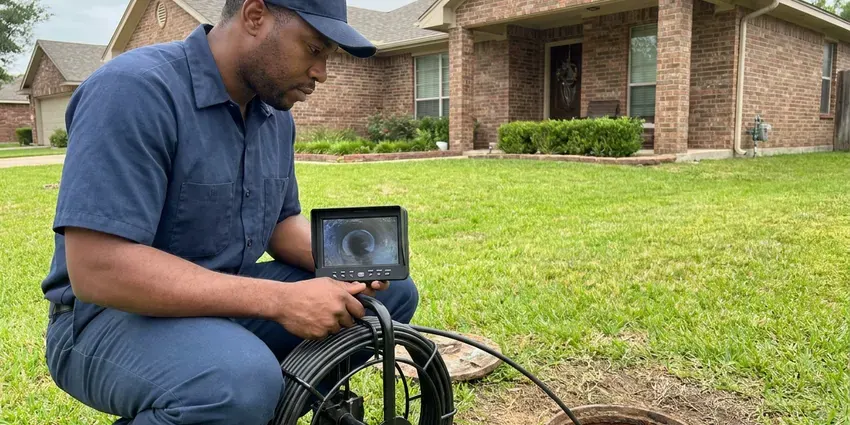

Drainage Services in Joplin, MO
Need water to go where it belongs? We clear, repair and install drainage systems for homes in Joplin, MO and run water through them before we go.
- Prompt Drainage Repair
- Clear Pricing
- Work Backed in Writing
- Certified Plumbers

Get Water Flowing Where It Belongs in Joplin, MO.
Standing water and slow drains only get worse. Call (816) 330-2338.
Experienced Drainage Plumbers in Joplin, MO
FGV Plumbing handles drainage inside and outside your home, including sink, tub and main line clogs. Outside, we install French drains, channel drains and downspout lines. Many drainage problems are really two problems, like a main line partly blocked by roots plus a downspout that dumps water right next to the cleanout, and we fix both.
Some of what we do:
- French drains, channel drains and pop-up outlets for yard runoff
- Root removal in sewer laterals
- Drain line repair and replacement

Additional Plumbing Maintenance Services in Joplin, MO
Our maintenance and specialty plumbing services in Joplin, MO catch small problems before they become emergencies.


Customers
Why Choose FGV Plumbing for Drainage Services in Joplin, MO?
Good drainage goes unnoticed until it fails. A clear sewer and a dry yard are what you are paying for. We use rigid PVC for yard drains instead of thin corrugated pipe, because corrugated pipe crushes under a mower or a car tire and is hard to jet clean when silt builds up.
- Modern Equipment, Our trucks carry camera and jetting equipment to find and clear the problem.
- Right Equipment, Cable machines, jetters, cameras and locators let us fix the cause instead of guessing.
- Licensed & Insured, Every plumber we send is licensed and insured.
Citywide Coverage
Commercial properties in Joplin get the same quick response as homeowners. Restaurants call us for grease lines. Property managers use us for parking lot catch basins and roof drain leaders, and we can work after hours so tenants are not dealing with jetting equipment in the hallway during business hours.
Experienced Team
Our drain technicians clear hundreds of lines a year. Roots feel different on a cable. They can tell from the camera image whether a line is cast iron with heavy scale, clay with offset joints or PVC with a belly, and they explain what that means for your house in plain words.
Safety-First Approach
Drain work in Joplin follows the adopted plumbing code and any local rules on discharge. Yard water cannot go into the sanitary sewer. We route yard drains and sump lines to legal outlets, and we pull permits for sewer replacements and new cleanouts where the jurisdiction requires them.
Trusted Certified Joplin Plumbing Services Professionals
At FGV Plumbing, we take pride in licensed, certified plumbing services throughout Joplin, MO. Those papers on the wall mean something. Every repair, install and maintenance visit follows strict safety and quality rules, and the plumbers doing the work carry recognized industry credentials.
Call Us Now PHCC Plumbing Contractor Recognition
PHCC Plumbing Contractor Recognition Better Business Bureau (BBB) Accreditation
Better Business Bureau (BBB) Accreditation Angi Certified Pro
Angi Certified Pro ISO 9001 Quality Management Certification
ISO 9001 Quality Management CertificationReliable Drainage Services in Joplin, MO
Sump Pump Services in Joplin, MO
A sump pump keeps groundwater out of basements and crawlspaces. We test the float, check the discharge line and check valve, and replace pumps that hum, run nonstop, or cannot keep up during a hard rain. Never pipe it to the sewer. Many sump floods come from a blocked discharge line, not a dead pump.

Restaurant and Industrial Drain Service in Joplin
Restaurants and industrial buildings put more grease and solids down the drain than any house. Interceptors need regular pumping. Kitchen lines get jetted between pump-outs, and we keep a service log for your inspector.
Hydro Jet Line Cleaning in Joplin
Jetting uses water at high pressure to strip a pipe back to its original diameter. Homes around Joplin on private wells should test for hardness and bacteria before picking a treatment system. Mineral scale and grease build up on pipe walls over years and catch everything that goes down the drain, so a cleaned pipe stays clear much longer than one that was only cabled. Most jetting jobs take two hours.
Hydro-Jetting Services in Joplin
A hydro jetter sends water at several thousand psi through a nozzle that scours the full pipe wall. Cables punch through clogs, but jetting removes the grease and scale coating the pipe, which is what keeps causing them. Restaurants need it most. We camera the line first to make sure the pipe is sound enough to jet.
Drainage Service Cost Comparison in Joplin, MO
Clearing a single fixture drain typically costs $125 to $300, and a main line clearing runs $200 to $500. Hydro jetting tends to run $350 to $800. Camera work adds a few hundred dollars, and French drains are priced by the linear foot.
Drainage System Maintenance in Joplin
Maintenance on a drain system is cheaper than an emergency call. Root-prone sewers get cut every 12 to 18 months and checked on camera. We flush yard drain lines as well.
Channel and Trench Drains in Joplin, MO
Driveways and patios that slope toward the house can send runoff straight into a garage or a door threshold. A channel drain catches that sheet flow. We saw-cut the slab, set a polymer or concrete channel with a grate rated for the traffic it will see, and pipe it in solid PVC to a safe discharge point away from the foundation.

Emergency Drain Clog Removal in Joplin, MO
An overflowing toilet or a backed-up shower is a health issue as much as a plumbing one. Wastewater carries bacteria. After clearing it, we figure out if it was one fixture or the main and disinfect the floor.
Drainage Plumbers Near Me in Joplin, MO
Local experience counts in drainage work because slope and soil change from block to block. Clay soil drains slowly. We test how your soil drains before choosing a dry well or a surface outlet.
A drainage company down the road from you knows how the neighborhood was built. Older streets tend to have clay laterals. Newer tracts tend to have PVC sewers and flatter yards with rear-lot swales that get filled in by landscaping, which sends water toward the house. We know both.
FGV Plumbing at a Glance
- Fully licensed plumbing team covering Joplin, MO
- Same-day appointments and 24/7 emergency response
- Upfront, flat-rate pricing before work begins
- 4.9-star rated by 307+ Missouri customers
Joplin Map
Joplin Information
- Population
- 53,095
- Area codes
- 417/573/620
- Service area
- Joplin and communities within 40 miles
- Nearby
- Springfield, Lee's Summit, Blue Springs, Independence
Drainage in Joplin, MO has to handle the heaviest storms, not the average one. Sudden downpours often overwhelm older sewer systems, which can push water back up through basement floor drains. We size yard drains and pipe for that.
Expert Services
Call FGV Plumbing for reliable plumbing work done by licensed pros in Joplin, MO.
Our Specialized Plumbing Services in Joplin, MO
At FGV Plumbing, we handle the full list of plumbing services across Joplin, MO. From leak detection to full system installs, our team works fast and charges fair prices on homes and commercial properties alike. Explore our core services below:


How Our Drainage Service Works in Joplin, MO
We keep drainage work tidy and quick, with a clear price up front.
Request a Quote
Call (816) 330-2338 and tell us if it is an indoor drain or outdoor water. We schedule a visit.
Inspect and Plan
We clear and camera indoor lines or walk your property to check slope and roof runoff.
Clear or Install
Our crew clears the line or installs the new drainage. We test it with running water.
Frequently Asked Questions About Drainage Services in Joplin
Drain clearing in Joplin usually runs $125 to $500 depending on the line, and hydro jetting runs $350 to $800. French drains cost more. Most residential French drain or downspout projects land between $2,000 and $8,000, depending on length, depth and how much hardscape we have to cut through or work around.
We advise against it. Chemical cleaners can damage older pipe and metal traps. They also rarely clear a full blockage, and when they fail, the plumber has to work around a trap full of caustic liquid that can burn skin and eyes, which slows the job and raises the risk.
Most sink and toilet clogs clear in under an hour. Main lines take longer. With a camera inspection and a clean, accessible cleanout, a main line job usually wraps up in about two hours, though roots or a hard-to-reach cleanout can stretch it to most of a morning.
Store-bought cleaners rarely clear a real clog. They can make things worse. The chemicals sit in the trap, heat up and can damage older pipe or soften glue joints, and if the clog does not clear, the plumber now has to open a trap full of caustic liquid. A hand auger is the better tool.
Sometimes. The answer depends on where you live. Certain areas require dry wells to be registered. Many also set minimum distances from buildings, property lines and septic systems, and a few limit what can drain into them, so we check the local rules for your address before we design one.
Call when more than one drain is slow, or when a toilet gurgles while the washer drains. That usually means the main line. Outside, call when water stands in the yard for more than a day after rain, when a downspout overflows the gutter in every storm, or when water shows up in the crawlspace or basement after a heavy rain.
Slow sinks and gurgling drains are the early signs. A sewer smell in the yard or basement comes next. Outside, look for water that stands more than a day after rain, soggy spots along the foundation, or mulch and soil washed onto the walk, all of which mean water is not leaving the yard the way it should.
A typical French drain or downspout system takes one to three days. Larger projects run longer. Dry wells, long trenches or saw-cut concrete can push it toward a week.
What Our Customers Say About Our Plumbing Experts

Carlos V.
Our house still had galvanized pipe, and upstairs the shower was a trickle. The crew repiped everything in PEX over three days and patched every drywall hole before they left. The pressure difference is night and day.
Repiping · Lee's Summit, MO
Patricia H.
We had a slab leak that two other companies could not find. FGV Plumbing located it in under an hour with a listening device. They rerouted the line through the attic instead of breaking up the floor, so we kept our kitchen tile.
Slab Leak Repair · Kansas City, MO
Rachel N.
Hard water was leaving white crust on every faucet and our dishwasher was struggling. The tech tested the water, recommended a softener sized for a family of five, and installed it with a bypass valve in one afternoon. The spots on our glasses are gone.
Water Softener · Blue Springs, MONathan E.
Our tankless heater kept throwing an error code and shutting off mid shower. The tech flushed the heat exchanger, which was full of scale, and replaced a bad flow sensor. Hot water has been steady for half a year now.
Water Heater Repair · Joplin, MOEmily R.
The shutoff valve under our kitchen sink snapped off in my hand on a Sunday morning. FGV Plumbing had someone out by early afternoon. He replaced both angle stops with quarter turn valves and showed me where our main shutoff was, which I honestly did not know.
Plumbing Repair · Liberty, MOAngela D.
Our sump pump quit during a storm and the water was an inch from the basement carpet. FGV Plumbing put in a new pump with a battery backup that same evening. We have had two heavy rains since. It kicked on both times.
Sump Pump · Lee's Summit, MO